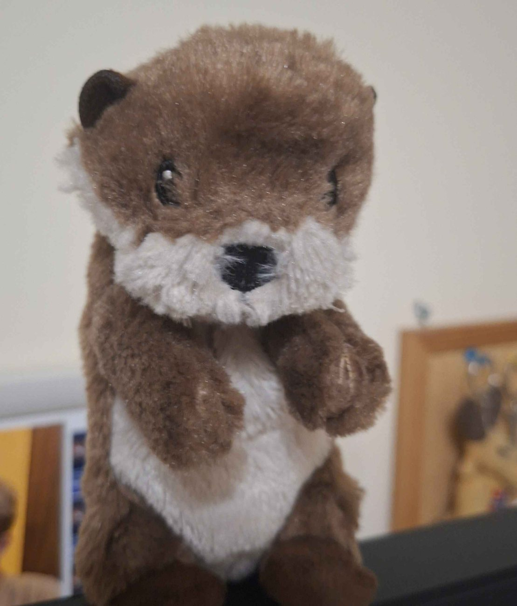

Jego ulubiony przedmiot
Język niemiecki. Fred kocha ten przedmiot tak bardzo, że zdecydował się zamieszkać na długi weekend w sali od niemieckiego
POZNAJ WYJĄTKOWEGO BOHATERA
Mały kawałek internetu poświęcony komuś, kto zdecydowanie zasługuje na własną stronę.

Fred - Legenda IIILO, która zmieniła historię tej szkoły na zawsze
Fred. Zwierzątko klasy 1C, który jednak szybko stał się popularny wśród nauczycieli i uczniów w całej szkole.
Poznaj kilka szczegółówKilka kadrów, kilka historii. Kliknij zdjęcie, aby zobaczyć je w większym formacie.
Język niemiecki. Fred kocha ten przedmiot tak bardzo, że zdecydował się zamieszkać na długi weekend w sali od niemieckiego
A dokłaniej rodzice 2 w 1.
Jest jedyną wydrą, która żyje na lądzie (bo chyba wydry żyją w wodzie też jak coś)
TO DOPIERO POCZĄTEK